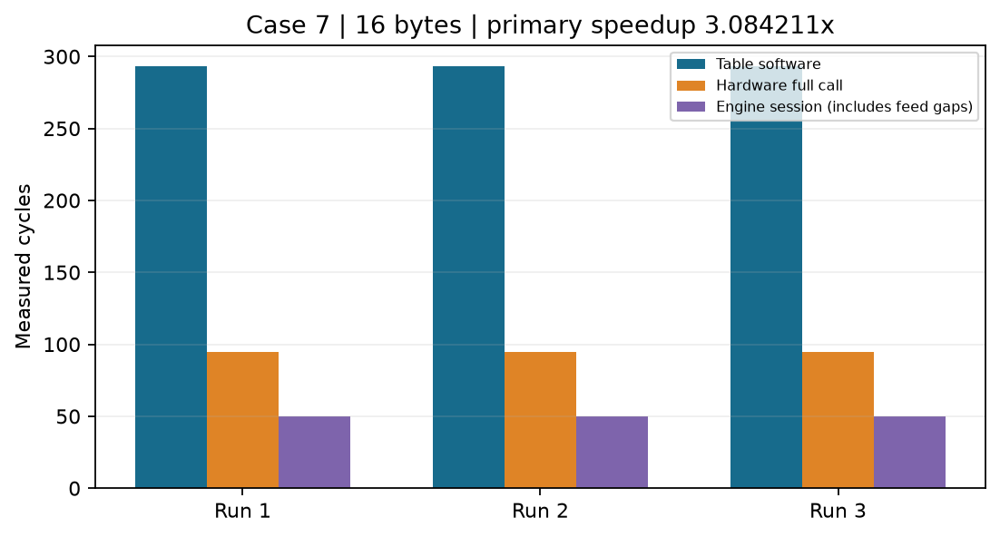

| run | case | bytes | software_cycles | hardware_total_cycles | engine_session_cycles | software_us | hardware_total_us | engine_session_us | speedup |
|---|---|---|---|---|---|---|---|---|---|
| 1 | 7 | 16 | 293 | 95 | 50 | 5.860000 | 1.900000 | 1.000000 | 3.084211 |
| 2 | 7 | 16 | 293 | 95 | 50 | 5.860000 | 1.900000 | 1.000000 | 3.084211 |
| 3 | 7 | 16 | 293 | 95 | 50 | 5.860000 | 1.900000 | 1.000000 | 3.084211 |